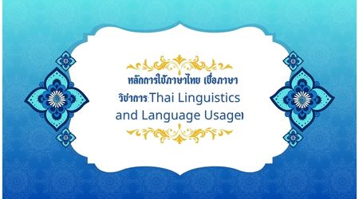

หลักการใช้ภาษาไทย (ชื่อภาษาวิชาการ:Thai Linguistics and Language Usage)
เป็นความรู้พื้นฐานที่ช่วยให้ผู้เรียนเข้าใจโครงสร้างและธรรมชาติของภาษา สามารถนำภาษาไปใช้ได้อย่างถูกต้องและเหมาะสม เนื้อหาครอบคลุมเรื่องเสียง คำ ประโยค และหลักเกณฑ์ต่าง ๆ ของภาษาไทย เช่น การออกเสียง การใช้คำ ชนิดของคำ การสร้างคำ การเรียบเรียงประโยค รวมถึงระดับภาษาและการเลือกใช้ภาษาให้เหมาะสมกับบุคคลและสถานการณ์ นอกจากนี้ยังควรเรียนรู้ว่าภาษาเป็นสิ่งที่มีการเปลี่ยนแปลงตามสังคมและกาลเวลา การเข้าใจธรรมชาติของภาษาและกฎเกณฑ์ของภาษาไทยจะช่วยให้สามารถสื่อสารได้ชัดเจน ลดความผิดพลาดในการใช้ภาษา และเห็นคุณค่าของภาษาไทยในฐานะสมบัติทางวัฒนธรรมของชาติ